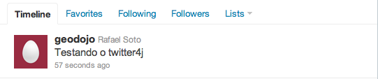

Contents
Vamos começar a aplicar o conhecimento aprendido até o momento para desenvolver funcionalidades muito próximas do que necessitamos nos sistemas da atualidade. Neste exemplo, vamos construir um formulário de inclusão de dados onde um dos campos deste formulário é um mapa para permitir o cadastro de um ponto. O objetivo do formulário é enviar um twitt com a geolocalização do usuário através da api Twitter4J.
<repository>
<id>twitter4j.org</id>
<name>twitter4j.org Repository</name>
<url>http://twitter4j.org/maven2</url>
<releases>
<enabled>true</enabled>
</releases>
<snapshots>
<enabled>true</enabled>
</snapshots>
</repository>
<!-- TWITTER4J DEPENDENCY -->
<dependency>
<groupId>org.twitter4j</groupId>
<artifactId>twitter4j-core</artifactId>
<version>2.1.6-SNAPSHOT</version>
</dependency>
Execute o comando para a atualização do projeto java:
user@geodojo-vm:~/geodojo/geodojo$ mvn -Dwtpversion=1.5 eclipse:eclipse
Vamos fazer um teste para ver se a api está funcionando corretamente. Este teste vai enviar um twitt para o usuário @geodojo.
package org.latinoware.geodojo.app.teste;
import org.junit.Test;
import twitter4j.Status;
import twitter4j.Twitter;
import twitter4j.TwitterException;
import twitter4j.TwitterFactory;
public class TesteTwitter4j {
@Test
public void send() throws TwitterException
{
// The factory instance is re-useable and thread safe.
Twitter twitter = new TwitterFactory().getInstance("geodojo","latinoware");
Status status = twitter.updateStatus("Testando o twitter4j");
System.out.println("Successfully updated the status to [" + status.getText() + "].");
}
}
Se tudo correr bem o profile deve ser atualizado com o novo status.

<!DOCTYPE html PUBLIC "-//W3C//DTD XHTML 1.0 Transitional//EN" "http://www.w3.org/TR/xhtml1/DTD/xhtml1-transitional.dtd">
<html xmlns="http://www.w3.org/1999/xhtml" xmlns:h="http://java.sun.com/jsf/html"
xmlns:f="http://java.sun.com/jsf/core"
xmlns:ui="http://java.sun.com/jsf/facelets"
xmlns:m="http://www.ol4jsf.org">
<h:head>
<style type="text/css">
table.featureInfo {
width: 100%;
}
.olControlPanel div {
display: block;
width: 24px;
height: 24px;
margin: 5px;
background-color: red;
}
.olControlPanel .olControlNavigationItemActive {
background-color: blue;
background-image:
url("#{resource['ol4jsf:theme/default/img/pan_on.png']}");
}
.olControlPanel .olControlNavigationItemInactive {
background-color: orange;
background-image:
url("#{resource['ol4jsf:theme/default/img/pan_off.png']}");
}
.olControlPanel .olControlZoomBoxItemInactive {
width: 22px;
height: 22px;
background-color: orange;
background-image:
url("#{resource['ol4jsf:theme/default/img/drag-rectangle-off.png']}");
}
.olControlPanel .olControlZoomBoxItemActive {
width: 22px;
height: 22px;
background-color: blue;
background-image:
url("#{resource['ol4jsf:theme/default/img/drag-rectangle-on.png']}");
}
.olControlPanel .olControlZoomToMaxExtentItemInactive {
width: 18px;
height: 18px;
background-image:
url("#{resource['ol4jsf:img/zoom-world-mini.png']}");
}
.olControlPanel .olControlDrawFeatureItemActive {
width: 22px;
height: 22px;
background-image:
url("#{resource['ol4jsf:theme/default/img/draw_point_on.png']}");
}
.olControlPanel .olControlDrawFeatureItemInactive {
width: 22px;
height: 22px;
background-image:
url("#{resource['ol4jsf:theme/default/img/draw_point_off.png']}");
}
</style>
</h:head>
<body>
<h1>Geodojo Send GeoTwitt</h1>
<h:messages/>
<h:form prependId="false">
Usuario: <h:inputText value="#{geotwittBean.twitt.autor}" /><br/>
Senha: <h:inputSecret value="#{geotwittBean.passwd}" redisplay="true"/><br/>
Status: <h:inputTextarea value="#{geotwittBean.twitt.mensagem}" maxLength="140" /><br/>
<m:map width="512px" height="480px"
options="{controls: [],
maxExtent: new OpenLayers.Bounds(
-73.991, -33.751,
-32.378, 5.272
),
maxResolution: 0.16255078125
}" renderOnWindowLoad="false">
<m:wmsLayer name="OpenLayers WMS"
url="#{facesContext.externalContext.requestContextPath}/OL4JSFProxy/wms"
params="{layers:'limite_politico'}" />
<m:inputVectorLayer name="Features" value="#{geotwittBean.twitt.location}" jsVariable="point" dropFeaturesBeforeDraw="true" />
<m:panelControl>
<m:navigationControl />
<m:zoomBoxControl />
<m:drawFeatureControl layer="point" handler="OpenLayers.Handler.Point" jsVariable="iControl"/>
<m:zoomToMaxExtentControl />
</m:panelControl>
<m:mousePositionControl></m:mousePositionControl>
<m:scaleLineControl></m:scaleLineControl>
<m:script>iControl.activate();</m:script>
</m:map>
<h:commandButton value="Update" action="#{geotwittBean.update}" />
</h:form>
</body>
</html>
package org.latinoware.geodojo.app.bean;
import javax.enterprise.inject.Model;
import javax.faces.application.FacesMessage;
import javax.faces.context.FacesContext;
import javax.inject.Inject;
import javax.persistence.EntityManager;
@Model
public class GeotwittBean {
private Geotwitt twitt = new Geotwitt();
private String passwd;
@Inject
private EntityManager em;
public Geotwitt getTwitt() {
return twitt;
}
public void setTwitt(Geotwitt twitt) {
this.twitt = twitt;
}
public String getPasswd() {
return passwd;
}
public void setPasswd(String passwd) {
this.passwd = passwd;
}
public void update() throws TwitterException
{
try {
this.persistGeoTwitt();
this.inicializaBean();
FacesContext.getCurrentInstance().addMessage(null, new FacesMessage("Twitter Enviado!"));
} catch (Throwable e) {
FacesContext.getCurrentInstance().addMessage(null, new FacesMessage("Ocorreu um Erro - [" + e.getCause() + "] - " + e.getMessage()));
}
}
private void persistGeoTwitt()
{
this.em.getTransaction().begin();
this.em.persist(this.twitt);
this.em.getTransaction().commit();
}
private void inicializaBean()
{
this.twitt = new Geotwitt();
this.passwd = "";
}
}
package org.latinoware.geodojo.app.converter;
import java.util.logging.Level;
import java.util.logging.Logger;
import javax.faces.component.UIComponent;
import javax.faces.context.FacesContext;
import javax.faces.convert.Converter;
import javax.faces.convert.FacesConverter;
import com.vividsolutions.jts.geom.Geometry;
import com.vividsolutions.jts.io.ParseException;
import com.vividsolutions.jts.io.WKTReader;
/**
*
* @author ranophoenix
*/
@FacesConverter(forClass = Geometry.class)
public class GeometryConverter implements Converter {
@Override
public Object getAsObject(FacesContext context, UIComponent component, String value) {
Geometry geom = null;
if (value != null) {
try {
WKTReader reader = new WKTReader();
geom = reader.read(value);
geom.setSRID(4326);
} catch (ParseException ex) {
Logger.getLogger(GeometryConverter.class.getName()).log(Level.SEVERE, null, ex);
}
}
return geom;
}
@Override
public String getAsString(FacesContext context, UIComponent component, Object value) {
return value.toString();
}
}
<?xml version="1.0" encoding="UTF-8" ?>
<!DOCTYPE html PUBLIC "-//W3C//DTD XHTML 1.0 Transitional//EN" "http://www.w3.org/TR/xhtml1/DTD/xhtml1-transitional.dtd">
<html xmlns="http://www.w3.org/1999/xhtml"
xmlns:h="http://java.sun.com/jsf/html"
xmlns:f="http://java.sun.com/jsf/core"
xmlns:ui="http://java.sun.com/jsf/facelets"
xmlns:m="http://www.ol4jsf.org">
<h:head>
<meta http-equiv="Content-Type" content="text/html; charset=UTF-8" />
<title>View Geotwitt</title>
</h:head>
<h:body>
<m:map width="512px" height="256px"
options="{controls: [], numZoomLevels: 6}">
<m:wmsLayer name="Brasil"
url="#{facesContext.externalContext.requestContextPath}/OL4JSFProxy/wms"
params="{layers:'limite_politico'}" />
<m:wmsLayer name="Geotwitt"
url="#{facesContext.externalContext.requestContextPath}/OL4JSFProxy/wms"
params="{layers:'geodojo:geotwitt',transparent:true}"
options="{isBaseLayer:false}" />
<m:featureInfoPopup
url="#{facesContext.externalContext.requestContextPath}/OL4JSFProxy/wms">
</m:featureInfoPopup>
<m:navigationControl />
<m:panZoomBarControl />
<m:layerSwitcherControl options="{ascending:false}" />
<m:scaleLineControl />
<m:mousePositionControl />
<m:overviewMapControl />
<m:keyboardDefaultsControl />
<m:permalinkControl />
</m:map>
</h:body>
</html>
package org.latinoware.geodojo.app.bean;
import javax.enterprise.inject.Model;
import javax.faces.application.FacesMessage;
import javax.faces.context.FacesContext;
import javax.inject.Inject;
import javax.persistence.EntityManager;
import org.latinoware.geodojo.app.entity.Geotwitt;
import twitter4j.GeoLocation;
import twitter4j.Twitter;
import twitter4j.TwitterException;
import twitter4j.TwitterFactory;
@Model
public class GeotwittBean {
private Geotwitt twitt = new Geotwitt();
private String passwd;
@Inject
private EntityManager em;
public Geotwitt getTwitt() {
return twitt;
}
public void setTwitt(Geotwitt twitt) {
this.twitt = twitt;
}
public String getPasswd() {
return passwd;
}
public void setPasswd(String passwd) {
this.passwd = passwd;
}
public void update() throws TwitterException
{
try {
this.persistGeoTwitt();
this.updateTwitter();
this.inicializaBean();
FacesContext.getCurrentInstance().addMessage(null, new FacesMessage("Twitter Enviado!"));
} catch (Throwable e) {
FacesContext.getCurrentInstance().addMessage(null, new FacesMessage("Ocorreu um Erro - [" + e.getCause() + "] - " + e.getMessage()));
}
}
private void updateTwitter() throws TwitterException
{
Twitter twitter = new TwitterFactory().getInstance(this.twitt.getAutor(),this.passwd);
twitter.updateStatus(this.twitt.getMensagem(),new GeoLocation(this.twitt.getLocation().getY(),this.twitt.getLocation().getX()));
}
private void persistGeoTwitt()
{
this.em.getTransaction().begin();
this.em.persist(this.twitt);
this.em.getTransaction().commit();
}
private void inicializaBean()
{
this.twitt = new Geotwitt();
this.passwd = "";
}
}